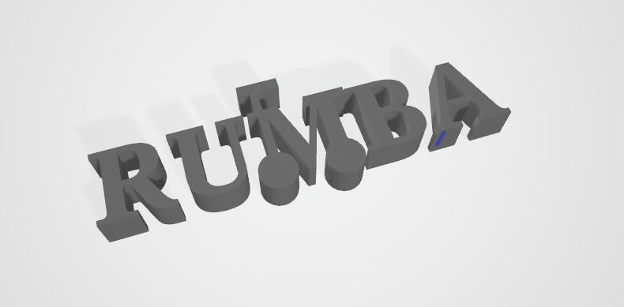
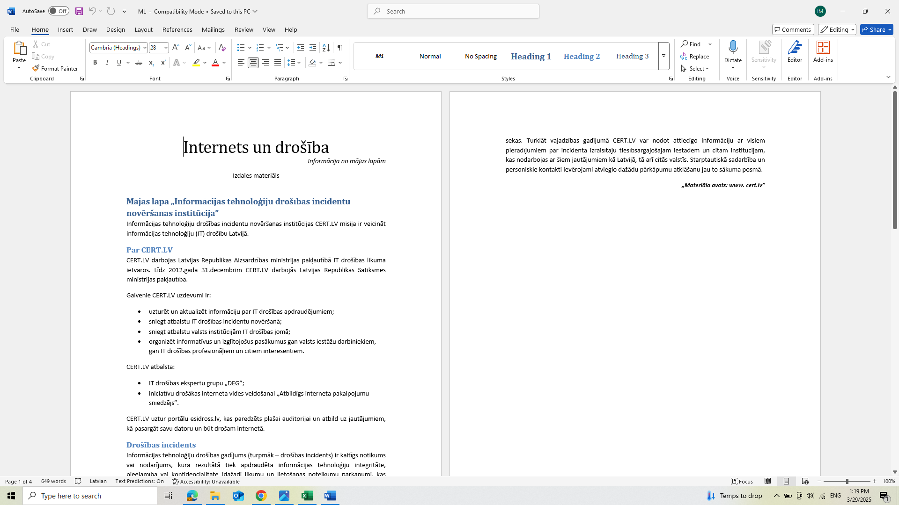
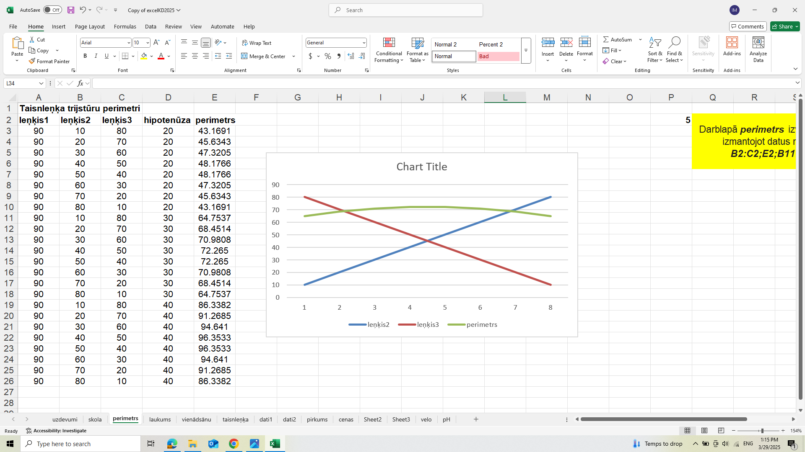

Mācību gada sākumā es apguvu attēlu apstrādi, kur iepazinos ar rastrgrafiku un vektorgrafiku. Šajā procesā iemācījos izmantot dažādas attēlu rediģēšanas programmas,kā arī izpratu atšķirību starp šiem diviem grafikas veidiem. Man bija arī iespēja strādāt ar 3D printeri, kas ļāva labāk izprast digitālā dizaina un fizisko objektu veidošanas principus.
Mācību gada sākumā es apguvu attēlu apstrādi, kur iepazinos ar rastrgrafiku un vektorgrafiku. Šajā procesā iemācījos izmantot dažādas attēlu rediģēšanas programmas,kā arī izpratu atšķirību starp šiem diviem grafikas veidiem.
Man bija arī iespēja strādāt ar 3D printeri, kas ļāva labāk izprast digitālā dizaina un fizisko objektu veidošanas principus.
Pēc tam mēs sākām darbu ar Microsoft Word, kur apguvu dokumentu formatēšanu, tabulu veidošanu, attēlu ievietošanu un citus svarīgus teksta apstrādesrīkus. Šīs zināšanas palīdzēja man radīt profesionāla izskata dokumentus un struktūrēt informāciju skaidrā un viegli uztveramā veidā.
Tuvojoties pirmā semestra beigām mēs sākām darboties ar programu Clipchamp, kur iemācijāmies video pievienot mūziku apgriezt to un pievienot īpašus efektus lai tas izskatītos interesants un noderīgs.
Vēlāk mēs pārgājām uz Microsoft Excel, kur apguvu, kā veidot tabulas, izmantot formulas un diagrammas datu analīzei. Iemācījos dažādas funkcijas, kas atvieglo skaitlisko datu apstrādi un organizēšanu.
